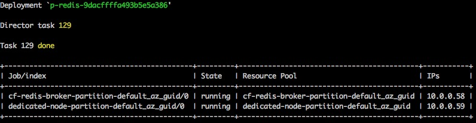

Manual Backup and Restore of Redis for PCF
Triggering a Manual Backup
Backups of your Redis deployment will automatically occur per the Cron Schedule you set in your deployment. You can trigger manual backups at any time by following the steps below. The backup artifacts will be sent to the destination configured in Ops Manager for automatic backups.
- Follow these steps to log into your Ops Manager installation and target the Redis tile deployment.
- Identify the VM which holds your instance by running
bosh vms.- For the
shared-vmplan this will be the job name containingcf-redis-broker. Runningmanual-backupwill back up all of the shared-vm instances and the broker state in thestatefile.jsonfile. - For the
dedicated-vmplan this will be the job name containingdedicated-node. Runningmanual-backupwill back up the Redis dump.rdb file for that dedicated-vm instance. - You can identify the exact node for your
dedicated-vmservice instance by comparing the IP Address from your application bindings.
- For the
An example output from bosh vms:

- Target the manifest of your deployed Redis with
bosh deployment PATH-TO-MANIFEST.yml. If you do not have this file, you can download it by runningbosh download manifest DEPLOYMENT-NAME. bosh sshinto the node you wish to back up (or thecf-redis-brokernode in ashared-vmplan).
Once you have connected to the node, a manual backup can be triggered with these steps:
- Switch to root using
sudo -i. - Run
/var/vcap/jobs/service-backup/bin/manual-backup
Notes
Triggering a manual backup of a large dump.rdb could take sufficiently long that your SSH connection will timeout. Ensure that you have given yourself enough of a timeout to complete the backup.
Back ups are currently not available for On-Demand instances.
Making Your Own Backups
It is possible to create a back up of a Redis instance by hand, bypassing the automated backup tool altogether.
Persistence is enabled on these plans through the use of RDB files, using the following Redis config rules:
save 900 1 save 300 10 save 60 10000
Shared-VM Plan
You can either take the latest RDB file held on disk, which is generated by the above the rules, or trigger a recent update by using the redis-cli to trigger a BGSAVE. Credentials to log into the redis-cli can be obtained from VCAP_SERVICES for your bound application.
The redis-cli is located in /var/vcap/packages/redis/bin/redis-cli.
On this plan, the BGSAVE command is aliased to a random string. This can be obtained from Ops Manager in the credentials tab.
Steps to Backup
bosh sshinto your desired node. See the above section on identifying the correct VM.- Change to root using
sudo -i. - Copy the contents of the
/var/vcap/store/cf-redis-brokerdirectory to a .zip or .tar file. - Backup the folder / compressed file to your chosen location.
The /var/vcap/store/cf-redis-broker has sub-directories for each instance created of this plan. The backup file for each instance is called dump.rdb.
For example, here are two instances:
root@66358f3e-3428-46df-9bb3-9acc7770b188:/var/vcap/store/cf-redis-broker# find -type f | xargs ls -1 ./redis-data/3124f373-e9e2-44e1-ad12-a8865d8978b0/db/dump.rdb ./redis-data/3124f373-e9e2-44e1-ad12-a8865d8978b0/redis.conf ./redis-data/3124f373-e9e2-44e1-ad12-a8865d8978b0/redis-server.pid ./redis-data/62333bf9-f023-4566-b233-6686f26b8f4d/db/dump.rdb ./redis-data/62333bf9-f023-4566-b233-6686f26b8f4d/redis.conf ./redis-data/62333bf9-f023-4566-b233-6686f26b8f4d/redis-server.pid ./statefile.json
Dedicated-VM Plan
You can either take the latest RDB file on disk, as generated by the above rules, or trigger a more recent RDB file by executing the BGSAVE command using the redis-cli. Credentials can be obtained from the VCAP_SERVICES from your bound application.
The redis-cli can be found in /var/vcap/packages/redis/bin/redis-cli.
Steps to Backup
bosh sshinto your desired node. See the above section on identifying the correct VM.- Change to root using
sudo -i. - Copy the contents of the
/var/vcap/store/redisdirectory to a .zip or .tar file. - Backup the folder / compressed file to your chosen location.
The backup file will be named dump.rdb.
Restore Redis Instance from a Backup
To a Local System
You can choose to restore the RDB file to a local Redis instance.
The steps to do this depend on your configuration and setup. Refer to the Redis documentation for more details.
To Pivotal Cloud Foundry
You can also restore your backup file to another instance of the Redis for PCF tile.
Prerequisites
- Same resource configuration as the instance from which you backed up.
- Ensure that the persistent disk is large enough to accommodate the temporary files used during the restore process. It should be 3.5x the amount of RAM in the VM.
To restore your backup file to another instance of a Redis for PCF tile service instance:
- Create a new instance of the plan that you wish to restore to.
- Identify the VM which the instance of your plan is located on by following the steps from the
Manual Backupssection above. If you are restoring an instance ofshared-vm, this VM is the broker VM. bosh sshinto the identified VM. This is the broker VM if restoring ashared-vminstance.
Redis for PCF version 1.7 and later provides a script to automatically restore data in a newly provisioned Redis instance.
Preparation
- Transfer your backup RDB file to a local path on the VM (
PATH-TO-RDB-BACKUP-ON-VMhas to be under/var/vcap/store. - To verify that the RDB file hasn’t been corrupted, run
md5sum PATH-TO-RDB-BACKUP-ON-VMand compare it against the contents of the.md5file named after the backup file. The values should be the same. The.md5file is located in the same bucket as the original backup file. - Switch to root user
sudo su
Dedicated-VM Plan
The restore script will restore the data for the specified dedicated-vm instance.
Execution
- Run
/var/vcap/jobs/redis-backups/bin/restore --sourceRDB PATH-TO-RDB-BACKUP-ON-VM. - Tail the script logs at
/var/vcap/sys/log/redis-backups/redis-backups.logto see progress. When the data restore has been successfully completed, you will see the messageRedis data restore completed successfully.
Debugging
The data restore script runs the steps listed below. It logs its process along the way and provides helpful messages in case of failure.
The script logs at /var/vcap/sys/log/redis-backups/redis-backups.log.
If a step has failed, resolve the reason that caused it to fail and execute the failed step and every next step manually.
You can retrieve {instance_password} through the binding to your service instance: cf service-key {instance_name} {key_name}
StopAll
Runmonit stop allWaitForStop
Wait for monit services to enter thenot monitoredstate, you can watch this withwatch monit summaryDeleteExistingPersistenceFiles
Clean up existing Redis data files:rm -f /var/vcap/store/redis/appendonly.aofrm -f /var/vcap/store/redis/dump.rdb
CopyBackupFileWithCorrectPermissions
Restore your Redis backup file to/var/vcap/store/redis/dump.rdband correct the owner and permissions withchown vcap:vcap /var/vcap/store/redis/dump.rdb && chmod 660 /var/vcap/store/redis/dump.rdbSetAppendOnly
Edit the template Redis config file withvim $(find /var/vcap/data/jobs/ -name redis.conf)` and make the following line changes:-
appendonly yes->appendonly no
-
StartAll
Runmonit start allWaitForStart
Wait for monit services to enter therunningstate, you can watch this withwatch monit summaryRewriteAOF
Run/var/vcap/packages/redis/bin/redis-cli -a {instance_password} BGREWRITEAOFRewriteAOF
Runwatch "/var/vcap/packages/redis/bin/redis-cli -a {instance_password} INFO | grep aof_rewrite_in_progress"untilaof_rewrite_in_progressis0StopAll
Runmonit stop allWaitForStop
Wait for monit services to enter thenot monitoredstate, you can watch this withwatch monit summaryChownToUserAndGroup
Set correct owner onappendonly.aofby runningchown vcap:vcap /var/vcap/store/redis/appendonly.aofSetAppendOnly
Edit the template Redis config file withvim $(find /var/vcap/data/jobs/ -name redis.conf)and make the following line changes:-
appendonly no->appendonly yes
-
StartAll
Runmonit start all
Shared-VM Plan
The restore script will restore the data for the specified shared-vm instance.
Execution
- Retrieve
{instance_guid}by running:cf service {instance_name} --guid - Run
/var/vcap/jobs/redis-backups/bin/restore --sourceRDB {path-to-rdb-backup-on-vm} --sharedVmGuid {instance_guid}. - Tail the script logs at
/var/vcap/sys/log/redis-backups/redis-backups.logto see progress. When the data restore has been successfully completed, you will see the messageRedis data restore completed successfully.
Debugging
The data restore script runs the steps listed below. It logs its process along the way and provides helpful messages in case of failure.
The script logs at /var/vcap/sys/log/redis-backups/redis-backups.log.
If a step has failed, resolve the reason that caused it to fail and execute the failed step and every next step manually.
You can retrieve {instance_password} and {port} through the binding to your service instance: cf service-key {instance_name} {key_name}
StopAll
Runmonit stop allWaitForStop
Wait for monit services to enter thenot monitoredstate, you can watch this withwatch monit summarySetConfigCommand
Edit the template Redis config file withvim /var/vcap/store/cf-redis-broker/redis-data/{instance_guid}/redis.confand comment out the line:rename-command CONFIG "configalias"->#rename-command CONFIG "configalias"
SetRewriteCommand
Edit the template Redis config file withvim /var/vcap/store/cf-redis-broker/redis-data/{instance_guid}/redis.confand comment out the line:rename-command BGREWRITEAOF ""->#rename-command BGREWRITEAOF ""
DeleteExistingPersistenceFiles
Clean up existing Redis data files if they exist:rm -f /var/vcap/store/cf-redis-broker/redis-data/{instance_guid}/db/appendonly.aofrm -f /var/vcap/store/cf-redis-broker/redis-data/{instance_guid}/db/dump.rdb
CopyBackupFileWithCorrectPermissions
Restore your Redis backup file to/var/vcap/store/cf-redis-broker/redis-data/{instance_guid}/db/dump.rdband correct the owner and permissions withchown vcap:vcap /var/vcap/store/cf-redis-broker/redis-data/{instance_guid}/db/dump.rdb && chmod 660 /var/vcap/store/cf-redis-broker/redis-data/{instance_guid}/db/dump.rdbSetAppendOnly
Edit the template Redis config file withvim /var/vcap/store/cf-redis-broker/redis-data/{instance_guid}/redis.confand make the following line changes:-
appendonly yes->appendonly no
-
StartAll
Runmonit start allWaitForStart
Wait for monit services to enter therunningstate, you can watch this withwatch monit summaryRewriteAOF
Run/var/vcap/packages/redis/bin/redis-cli -a {instance_password} BGREWRITEAOFRewriteAOF
Runwatch "/var/vcap/packages/redis/bin/redis-cli -a {instance_password} INFO | grep aof_rewrite_in_progress"untilaof_rewrite_in_progressis0StopAll
Runmonit stop allWaitForStop
Wait for monit services to enter thenot monitoredstate, you can watch this withwatch monit summaryChownToUserAndGroup
Set correct owner onappendonly.aofby runningchown vcap:vcap /var/vcap/store/redis/appendonly.aofSetAppendOnly
Edit the template Redis config file withvim /var/vcap/store/cf-redis-broker/redis-data/{instance_guid}/redis.confand make the following line changes:-
appendonly no->appendonly yes
-
SetConfigCommand
Edit the template Redis config file withvim /var/vcap/store/cf-redis-broker/redis-data/{instance_guid}/redis.confand uncomment the line:#rename-command CONFIG "configalias"->rename-command CONFIG "configalias"SetRewriteCommand
Edit the template Redis config file withvim /var/vcap/store/cf-redis-broker/redis-data/{instance_guid}/redis.confand uncomment the line:#rename-command BGREWRITEAOF ""->rename-command BGREWRITEAOF ""StartAll
Runmonit start all
Recovering Redis Instances
In the event of a recovery of Cloud Foundry, it is possible to recover bound Redis instances to healthy states that are in sync with Cloud Foundry. There are a few caveats to being able to recover previous instance state fully that depend on your plan.
Shared-VM Plan Caveats
- You need a backed up RDB Redis dump file - this would be stored in your S3 buckets if you have backups configured
- You need a backed up
/var/vcap/store/cf-redis-broker/redis-datadirectory from the service broker node (you do not need to backup and*.aofor*.rdbfiles from subdirectories if you have backups configured)
Dedicated-VM Plan Caveats
- You need a backed up RDB Redis dump file - this would be stored in your S3 buckets if you have backups configured
- You need a backed up
/var/vcap/store/redis/statefile.jsonfrom the service broker node
Note
This procedure assumes that a recovery of service information and service keys assigned to instances are restored with a restore of Cloud Foundry.
Recovery Procedure
After redeploying Redis, take the following steps.
Shared-VM Plan
bosh sshinto the service broker node of your Redis deployment- Run
monit stop all && pkill redis-server - Wait for monit services to enter the
not monitoredstate, you can watch this withwatch monit summary - Confirm no running instances of
redis-serverwithps aux | grep redis-server - Copy the backed up
redis-datadirectory into/var/vcap/store/cf-redis-broker - Follow the instructions here for your plan, skipping the first four steps described here, for restoring your backed up Redis data
- Your Redis instance is now recovered
Dedicated-VM Plan
bosh sshinto the service broker node of your Redis deployment- Run
monit stop all - Wait for monit services to enter the
not monitoredstate, you can watch this withwatch monit summary - Copy the backed up
/var/vcap/store/cf-redis-broker/statefile.jsonand ensure ownership and permissions are correct withchown vcap:vcap /var/vcap/store/redis/dump.rdb && chmod 660 /var/vcap/store/redis/dump.rdb - Follow the instructions here for your plan, skipping the first three steps described here, for restoring your backed up Redis data
- Your Redis instance is now recovered